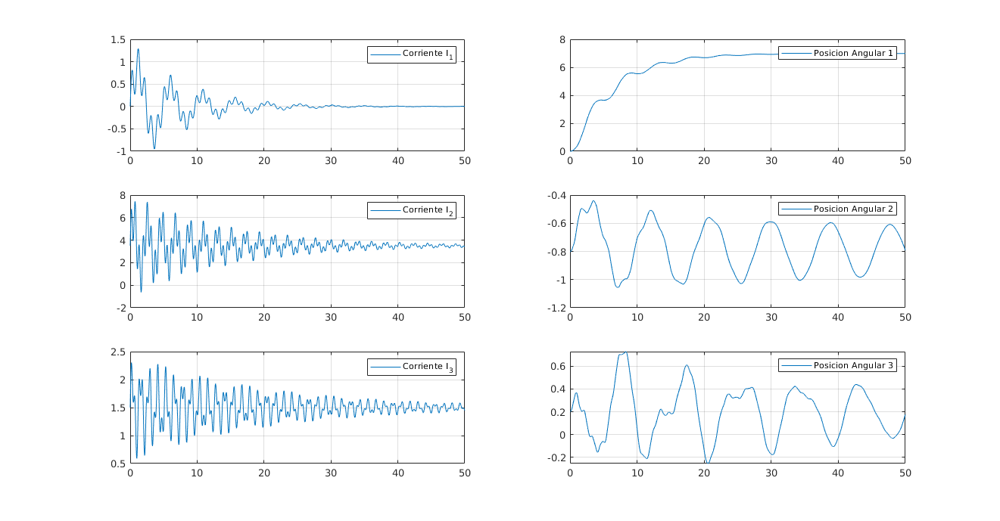

Contents
clear all;
clc;
syms q1 qd1 qdd1 q2 qd2 qdd2 q3 qd3 qdd3 g real
syms m1 m2 m3 Bm1 Bm2 Bm3 Jm1 Jm2 Jm3 Ixx1 Ixx2 Ixx3 Iyy1 Iyy2 Iyy3 Izz1 Izz2 Izz3 real
syms Im1 Im2 Im3 R1 R2 R3 l0 l1 l2 l3 Lc1 Lc2 Lc3 real
PI = sym('pi');
fprintf('Obteniendo modelo...\n');
theta0=0 ; d0=l0 ; a0=0 ; alpha0=0;
theta1=q1 ; d1=l1 ; a1=0 ; alpha1=PI/2 ;
theta2=q2 ; d2=0 ; a2=l2 ; alpha2=0 ;
theta3=q3 ; d3=0 ; a3=l3 ; alpha3=0 ;
theta4=0 ; d4=0; a4=0 ; alpha4=0 ;
s11 = [0,-Lc1,0]';
I11=[Ixx1,0,0;0,Iyy1,0;0,0,Izz1];
s22 = [-Lc2,0,0]';
I22=[Ixx2,0,0;0,Iyy2,0;0,0,Izz2];
s33 = [-Lc3,0,0]';
I33=[Ixx3,0,0;0,Iyy3,0 ;0,0,Izz3];
p11 = [a1, d1*sin(alpha1), d1*cos(alpha1)]';
p22 = [a2, d2*sin(alpha2), d2*cos(alpha2)]';
p33 = [a3, d3*sin(alpha3), d3*cos(alpha3)]';
p44 = [a4, d4*sin(alpha4), d4*cos(alpha4)]';
w00 = [0 0 0]';
wd00 = [0 0 0]';
v00 = [0 0 0]';
vd00 = [0 0 g]';
f44= [0 0 0]';
n44= [0 0 0]';
Z=[0 0 1]';
R01=[cos(theta1) -cos(alpha1)*sin(theta1) sin(alpha1)*sin(theta1);
sin(theta1) cos(alpha1)*cos(theta1) -sin(alpha1)*cos(theta1);
0 sin(alpha1) cos(alpha1) ];
R10= R01';
R12=[cos(theta2) -cos(alpha2)*sin(theta2) sin(alpha2)*sin(theta2);
sin(theta2) cos(alpha2)*cos(theta2) -sin(alpha2)*cos(theta2);
0 sin(alpha2) cos(alpha2) ];
R21= R12';
R23=[cos(theta3) -cos(alpha3)*sin(theta3) sin(alpha3)*sin(theta3);
sin(theta3) cos(alpha3)*cos(theta3) -sin(alpha3)*cos(theta3);
0 sin(alpha3) cos(alpha3) ];
R32= R23';
R34=[cos(theta4) -cos(alpha4)*sin(theta4) sin(alpha4)*sin(theta4);
sin(theta4) cos(alpha4)*cos(theta4) -sin(alpha4)*cos(theta4);
0 sin(alpha4) cos(alpha4) ];
R43= R34';
w11= R10*(w00+Z*qd1);
w22= R21*(w11+Z*qd2);
w33= R32*(w22+Z*qd3);
wd11 = R10*(wd00+Z*qdd1+cross(w00,Z*qd1));
wd22 = R21*(wd11+Z*qdd2+cross(w11,Z*qd2));
wd33 = R32*(wd22+Z*qdd3+cross(w22,Z*qd3));
vd11 = cross(wd11,p11)+cross(w11,cross(w11,p11))+R10*vd00;
vd22 = cross(wd22,p22)+cross(w22,cross(w22,p22))+R21*vd11;
vd33 = cross(wd33,p33)+cross(w33,cross(w33,p33))+R32*vd22;
a11 = cross(wd11,s11)+cross(w11,cross(w11,s11))+vd11;
a22 = cross(wd22,s22)+cross(w22,cross(w22,s22))+vd22;
a33 = cross(wd33,s33)+cross(w33,cross(w33,s33))+vd33;
f33=R34*f44+m3*a33;
f22=R23*f33+m2*a22;
f11=R12*f22+m1*a11;
n33 = R34*(n44+cross(R43*p33,f44))+cross(p33+s33,m3*a33)+I33*wd33+cross(w33,I33*w33);
n22 = R23*(n33+cross(R32*p22,f33))+cross(p22+s22,m2*a22)+I22*wd22+cross(w22,I22*w22);
n11 = R12*(n22+cross(R21*p11,f22))+cross(p11+s11,m1*a11)+I11*wd11+cross(w11,I11*w11);
N3z = n33'*R32*Z;
N3 = n33'*R32;
F3z = f33'*R32*Z;
F3 = f33'*R32;
N2z = n22'*R21*Z;
N2 = n22'*R21;
F2z = f22'*R21*Z;
F2 = f22'*R21;
N1z = n11'*R10*Z;
N1 = n11'*R10;
F1z = f11'*R10*Z;
F1 = f11'*R10;
T1=N1z;
T2=N2z;
T3=N3z;
M11=diff(T1,qdd1);
Taux=simplify(T1-M11*qdd1);
M12=diff(Taux,qdd2);
Taux=simplify(Taux-M12*qdd2);
M13=diff(Taux,qdd3);
Taux=simplify(Taux-M13*qdd3);
G1 = diff(Taux,g)*g;
Taux = simplify(Taux-G1);
V1 = Taux;
M21 = diff(T2,qdd1);
Taux = simplify(T2-M21*qdd1);
M22 = diff(Taux,qdd2);
Taux = simplify(Taux-M22*qdd2);
M23 = diff(Taux,qdd3);
Taux = simplify(Taux-M23*qdd3);
G2=diff(Taux,g)*g;
Taux=simplify(Taux-G2);
V2=Taux;
M31=diff(T3,qdd1);
Taux=simplify(T3-M31*qdd1);
M32=diff(Taux,qdd2);
Taux=simplify(Taux-M32*qdd2);
M33=diff(Taux,qdd3);
Taux=simplify(Taux-M33*qdd3);
G3=diff(Taux,g)*g;
Taux=simplify(Taux-G3);
V3=Taux;
M11=simplify(M11);M12=simplify(M12);M13=simplify(M13);
M21=simplify(M21);M22=simplify(M22);M23=simplify(M23);
M31=simplify(M31);M32=simplify(M32);M31=simplify(M33);
V1=simplify(V1);V2=simplify(V2);V3=simplify(V3);
G1=simplify(G1);G2=simplify(G2);G3=simplify(G3);
M=[M11 M12 M13;M21 M22 M23;M31 M32 M33];
V=[V1 V2 V3]';
G=[G1 G2 G3]';
R=diag([R1 R2 R3]);
Jm=diag([Jm1 Jm2 Jm3]);
Bm=diag([Bm1 Bm2 Bm3]);
Ma=M+R*R*Jm;
Va=V+R*R*Bm*([qd1;qd2;qd3]);
Ga=G;
clearvars -except Ma Va Ga
fprintf('Hecho.\n\n');
Obteniendo modelo...
Hecho.
DESPEJE DE PARAMETROS %%
fprintf('Despejando parametros por diferenciacion...\n');
syms q1 qd1 qdd1 q2 qd2 qdd2 q3 qd3 qdd3 g real
syms m1 m2 m3 Bm1 Bm2 Bm3 Jm1 Jm2 Jm3 Ixx1 Ixx2 Ixx3 Iyy1 Iyy2 Iyy3 Izz1 Izz2 Izz3 real
syms Im1 Im2 Im3 R1 R2 R3 K1 K2 K3 l0 l1 l2 l3 Lc1 Lc2 Lc3 real
syms Gamma real
R=diag([R1 R2 R3]);
Kt=diag([K1 K2 K3]);
Kt_R_Im = (Ma*([qdd1;qdd2;qdd3]) + Va + Ga);
Theta = [m1*Lc1^2 m1*Lc1 m1 Jm1 Bm1 Ixx1 Iyy1 Izz1 ...
m2*Lc2^2 m2*Lc2 m2 Jm2 Bm2 Ixx2 Iyy2 Izz2 ...
m3*Lc3^2 m3*Lc3 m3 Jm3 Bm3 Ixx3 Iyy3 Izz3].';
Kt_R_Im_aux = Kt_R_Im;
Gamma(1:3,1) = simplify(0.5*diff(simplify(diff(simplify(diff(Kt_R_Im_aux,m1)),Lc1)),Lc1));
Kt_R_Im_aux = simplify(Kt_R_Im_aux-Gamma(1:3,1)*m1*Lc1^2);
Gamma(1:3,2) = simplify(diff(simplify(diff(Kt_R_Im_aux,Lc1)),m1));
Kt_R_Im_aux = simplify(Kt_R_Im_aux-Gamma(1:3,2)*m1*Lc1);
for i=3:8
Gamma(1:3,i) = simplify(diff(Kt_R_Im_aux,Theta(i)));
Kt_R_Im_aux = simplify(Kt_R_Im_aux-Gamma(1:3,i)*Theta(i));
end
Gamma(1:3,9) = simplify(0.5*diff(simplify(diff(simplify(diff(Kt_R_Im_aux,m2)),Lc2)),Lc2));
Kt_R_Im_aux = simplify(Kt_R_Im_aux-Gamma(1:3,9)*m2*Lc2^2);
Gamma(1:3,10) = simplify(diff(simplify(diff(Kt_R_Im_aux,Lc2)),m2));
Kt_R_Im_aux = simplify(Kt_R_Im_aux-Gamma(1:3,10)*m2*Lc2);
for i=11:16
Gamma(1:3,i) = simplify(diff(Kt_R_Im_aux,Theta(i)));
Kt_R_Im_aux = simplify(Kt_R_Im_aux-Gamma(1:3,i)*Theta(i));
end
Gamma(1:3,17) = simplify(0.5*diff(simplify(diff(simplify(diff(Kt_R_Im_aux,m3)),Lc3)),Lc3));
Kt_R_Im_aux = simplify(Kt_R_Im_aux-Gamma(1:3,17)*m3*Lc3^2);
Gamma(1:3,18) = simplify(diff(simplify(diff(Kt_R_Im_aux,Lc3)),m3));
Kt_R_Im_aux = simplify(Kt_R_Im_aux-Gamma(1:3,18)*m3*Lc3);
for i=19:24
Gamma(1:3,i) = simplify(diff(Kt_R_Im_aux,Theta(i)));
Kt_R_Im_aux = simplify(Kt_R_Im_aux-Gamma(1:3,i)*Theta(i));
end
fprintf('Hecho.\n\n');
fprintf('Comprobando diferenciacion...\n');
Res = simplify(Kt_R_Im-(Gamma*Theta));
fprintf(' %s\n',char(Res));
if(Res == [0 0 0]')
fprintf('Diferenciacion correcta.\n\n');
else
fprintf('Algo ha fallado. Info depuracion:\n\n');
Gamma
Theta
Kt_R_Im
return;
end
Despejando parametros por diferenciacion...
Hecho.
Comprobando diferenciacion...
matrix([[0], [0], [0]])
Diferenciacion correcta.
OBTENCION DE COLUMNAS INDEPENDIENTES DE GAMMA %%
l0 = 0.4;
l1 = 2;
l2 = 3;
l3 = 4;
R1 = 50;
R2 = 30;
R3 = 15;
K1 = 0.5;
K2 = 0.4;
K3 = 0.35;
R = diag([R1 R2 R3]);
K = diag([K1 K2 K3]);
g = 9.81;
for i=1:3:24
qdd1 = rand; qd1 = rand; q1 = rand;
qdd2 = rand; qd2 = rand; q2 = rand;
qdd3 = rand; qd3 = rand; q3 = rand;
Gamma_num(i:i+2,:) = eval(Gamma);
end
fprintf('Calculando columnas independientes de gamma y reduciendo...\n');
[A,jb] = rref(Gamma_num);
aux = round(A,7)*Theta;
fprintf('Theta reducido numerico:\n');
Theta_reduced = aux(find(aux));
for i = 1:length(Theta_reduced)
fprintf(' %s\n', char(Theta_reduced(i)))
end
fprintf('\n');
Gamma_reduced = Gamma(1:3,jb);
clear l1 l2 l3 R1 R2 R3;
syms Theta_reduced l1 l2 l3 R1 R2 R3 real;
fprintf('En simbolico theta resulta ser:\n');
Theta_reduced = [(1/R1^2)*Ixx2 + (1/R1^2)*Iyy1 + (1/R1^2)*Iyy3 - (1/R1^2)*Izz3 + Jm1;
Bm1;
m2*Lc2^2 - Ixx2 + Iyy2 - l2^2*m2 - l2^2*m3;
Lc2*m2 - l2*m3 - l2*m2;
(1/R2^2)*Ixx2 - (1/R2^2)*Iyy2 + (1/R2^2)*Izz2 + Jm2;
Bm2;
m3*Lc3^2 + Izz3 - (l3^2)*m3;
Lc3*m3 - l3*m3;
Jm3;
Bm3;
Ixx3 - Iyy3 + Izz3];
for i = 1:length(Theta_reduced)
fprintf(' %s\n', char(Theta_reduced(i)))
end
fprintf('\n');
fprintf('Comprobando los resultados...\n');
Res = simplify(Kt_R_Im-(Gamma_reduced*Theta_reduced));
fprintf(' %s\n',char(Res));
if(Res == [0 0 0]')
fprintf('Diferenciacion correcta\n\n\n');
else
fprintf('Algo ha fallado. Info depuracion:\n');
Gamma_reduced
Theta_reduced
Kt_R_Im
end
Calculando columnas independientes de gamma y reduciendo...
Theta reducido numerico:
Ixx2/2500 + Iyy1/2500 + Iyy3/2500 - Izz3/2500 + Jm1
Bm1
Iyy2 - Ixx2 - 9*m2 - 9*m3 + Lc2^2*m2
Lc2*m2 - 3*m3 - 3*m2
(5124044335074671*Ixx2)/4611686018427387904 - (5124044335074671*Iyy2)/4611686018427387904 + (5124044335074671*Izz2)/4611686018427387904 + Jm2
Bm2
Izz3 - 16*m3 + Lc3^2*m3
Lc3*m3 - 4*m3
Jm3
Bm3
Ixx3 - Iyy3 + Izz3
En simbolico theta resulta ser:
Jm1 + Ixx2/R1^2 + Iyy1/R1^2 + Iyy3/R1^2 - Izz3/R1^2
Bm1
Iyy2 - Ixx2 + Lc2^2*m2 - l2^2*m2 - l2^2*m3
Lc2*m2 - l2*m2 - l2*m3
Jm2 + Ixx2/R2^2 - Iyy2/R2^2 + Izz2/R2^2
Bm2
Izz3 + Lc3^2*m3 - l3^2*m3
Lc3*m3 - l3*m3
Jm3
Bm3
Ixx3 - Iyy3 + Izz3
Comprobando los resultados...
matrix([[0], [0], [0]])
Diferenciacion correcta
SIMULACION %%
Ts = 0.001;
ini = 1;
fin = 50;
R1=50;R2=30;R3=15;
Im1_cc = 0; Im2_cc = 3.7; Im3_cc = 1;
Tau1 = 8;Tau2 = 15;Tau3 = 20;
Aa1 = 1; wa1 = 1.3; Ab1 = 0.5; wb1 = wa1*5;
Aa2 = Im2_cc*0.7; wa2 = 3; Ab2 = Aa2*0.8; wb2 = wa2*3.5;
Aa3 = Im3_cc*0.6; wa3 = 5; Ab3 = Aa3*0.62; wb3 = wa3*2.2;
q2ini=-0.80020550259323;
q3ini=0.202600802956157;
noise = 0.01;
fprintf('Empezando simulacion..\n');
sim('analisisDinamico.slx');
fprintf('Fin de simulacion.\n');
Empezando simulacion..
Fin de simulacion.
figure('units','normalized','outerposition',[0 0 1 1])
subplot1 = subplot(3,2,1);
plot1 = plot(tout,Im(:,1));
set(plot1(1),'DisplayName','Corriente I_1');
legend(subplot1,'show');
grid;
subplot1 = subplot(3,2,3);
plot1 = plot(tout,Im(:,2));
set(plot1(1),'DisplayName','Corriente I_2');
legend(subplot1,'show');
grid;
subplot1 = subplot(3,2,5);
plot1 = plot(tout,Im(:,3));
set(plot1(1),'DisplayName','Corriente I_3');
legend(subplot1,'show');
grid;
subplot1 = subplot(3,2,2);
plot1 = plot(tout,q(:,1));
set(plot1(1),'DisplayName','Posicion Angular 1');
legend(subplot1,'show');
grid;
subplot1 = subplot(3,2,4);
plot1 = plot(tout,q(:,2));
set(plot1(1),'DisplayName','Posicion Angular 2');
legend(subplot1,'show');
grid;
subplot1 = subplot(3,2,6);
plot1 = plot(tout,q(:,3));
set(plot1(1),'DisplayName','Posicion Angular 3');
legend(subplot1,'show');
grid;
save('modeloSimbolico.mat');
